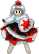

- Welcome to Touhou Wiki!
- Please register to edit. For assistance, check in with our Discord server or IRC channel.
Momiji Inubashiri
Momiji Inubashiri inɯbaɕiɽʲi momʲidʑi (♫) Momizi Inubashiri | |
|---|---|
|
 Sprite of Momiji Inubashiri in Double Spoiler The Petty Patrol TenguMore Character Titles | |
| Species | |
| Abilities |
Seeing a thousand ri ahead |
| Age |
At least over 49 years old, said to be especially long-lived [1] |
| Occupation |
Patrolling and guarding Youkai Mountain |
| Location | |
Appearances | |
| Official Games | |
| |
| Print Works | |
| |
Momiji Inubashiri (犬走 椛 Inubashiri Momiji) is a white wolf tengu whose duty is to patrol the Youkai Mountain. Her good sense of smell and sight are helpful for this duty. Momiji does not have an official game portrait, only a sprite from Mountain of Faith, Double Spoiler and Impossible Spell Card. However, she does have some appearances in print works.
General Information[edit]
Momiji has a very co-operative personality who executes her duties faithfully. When she's got free time on her hands, she'll play Dai Shōgi with the kappa.
Ability[edit]
- Seeing a thousand ri ahead
Momiji has a telegnosis ability that allows her to see a thousand ri ahead (approximately 3,927 kilometres, or 2,440 miles). She also has a superior sense of smell, that combined with her ability makes her able to detect any intruder in an instant.
- Abilities as tengu
Akyuu describes tengu as one of the strongest species, both in physical and magical abilities. While nothing about Momiji herself has especially come to light, she is likely to possess some of those traits, such as their (almost) unmatched speed.
Occupation[edit]
One of the Youkai Mountain tengu's patrols. Her job is to attempt to stop intruders on the mountain with simple attacks and report any that were undeterred to Tenma.
Character Basis[edit]
Momiji's wolf-like appearance may be a reference to the Tiangou, a Chinese version of a tengu that is described to be more dog-like.
Name[edit]
Her full name is Momiji Inubashiri (犬走 椛). Inubashiri (犬走, lit. "dog run") is an actual used (but very rare) surname in Japan. It refers to the dirt path outside of building or residence used for patrols ("berm" is corresponded to the term in this usage on the English Wikipedia) — the etymology of this word comes from the fact that the path is so narrow that only a dog can rush through it in a very short time, which has effect to give Momiji's image her speedy might. But the word also indicates her simple-but-fundamental social class; she protects the basement of architecture from erosion, like the occupation of white wolf tengu. Momiji is one of several Japanese names for maple trees (read same, but written as 紅葉 in this usage). The kanji used in her name 椛 refers to "birch". Maple, however makes more sense as she has a maple leaf depicted on her shield.
Design[edit]
Momiji only has a small sprite used in Mountain of Faith, Double Spoiler and Impossible Spell Card, so an accurate description is not possible, but from the sprite, we see that she wears a white, long-sleeved shirt, and a large black skirt with red flame-like designs reaching up from the bottom of the skirt, and that it has a white layer below her skirt. She has short light silver hair and wears a red tokin. She holds a large scimitar-like sword and a white, round shield with a red maple leaf print on it.
In a later appearance in Oriental Sacred Place, it is seen she has detached sleeves and wolf ears. However, in Symposium of Post-mysticism, she is seen without wolf ears.
Story[edit]
Windows Games[edit]
- Mountain of Faith
- Main article: Mountain of Faith Story
Momiji is the stage 4 midboss of Mountain of Faith. When the heroine finally reached Youkai Mountain during Mountain of Faith, Momiji attempted to stop her at the waterfall. Although Momiji was unsuccessful, it seems she did fulfill her duty of reporting the intruder's presence back to the other tengu with record speed, as a reinforcement tengu named Aya Shameimaru had arrived by the end of the same stage to investigate what was going on.
Later, Momiji observed the final battles between the heroine and the newly appeared shrine and its god, apparently without being noticed by either of them.
Spin-offs[edit]
- Double Spoiler
Momiji is one of the many who has her danmaku photographed by Aya Shameimaru and Hatate Himekaidou, which appears on stage 4.
- Impossible Spell Card
Momiji attacks Seija Kijin on the Youkai Mountain on day 6, using a spell card that is considered impossible to dodge. It's unknown if Momiji actually went out searching for Seija like many others, or if she was just doing her job of keeping Seija away from the Youkai Mountain.
Literature[edit]
- Symposium of Post-mysticism
- Main article: Symposium of Post-mysticism: Momiji's Bunbunmaru Article
Back in 1963, Momiji discovered new Shogi pieces from the outside world in Muenzuka. Having believed that the tengu were the only ones creating unique rules for the game, she became a bit frustrated that the same thing was happening in the outside world. She wanted to see how Shogi had developed in the outside world, then speculated that the game had become simplified, because the pieces she found couldn't be promoted.
Relationships[edit]
When she meets Aya they often get into fights with each other. According to Aya, Momiji looks down on her and the other crow tengu. Hatate, however, implies that this is only a personal feud between Momiji and Aya.
She is very loyal to the chief of the tengu, Lord Tenma.
As said in her profile, she's an avid player of Dai Shōgi, which she plays with the kappa when she is bored.
Gallery[edit]
Momiji in Symposium of Post-mysticism, with other characters who don't appear in the book.
Spell Cards[edit]
Fandom[edit]
Official Profiles[edit]
| ○４面中ボス 下っ端哨戒天狗 犬走 椛（いぬばしり もみじ） 種族：白狼天狗 妖怪の山で見回りをしている天狗。 彼女の部隊は普段、滝の裏側で待機している。 ただし、妖怪の山には滅多に侵入者は無くていつも暇している。 寿命が長い妖怪達にとっては、暇つぶしの手段を探すのも難しい。 |
Stage 4 Midboss The Petty Patrol Tengu Momiji Inubashiri Species: White Wolf Tengu A tengu that patrols the Youkai Mountain. Thanks to her superior senses of sight and smell, she can detect any intruder in an instant. When she discovers intruders she attempts to intimidate them with simple attacks, and once they cannot handle the intruders, they reports to the Great Tengu. Her forces are usually lying in wait behind the waterfall. She has a very cooperative personality and executes her duties faithfully. This is unusual for youkai, but not uncommon in tengu society. However, she usually has a lot of free time, as the Youkai Mountain doesn't receive many intruders. While awaiting orders, she enjoys playing a rather time-consuming game called Dai shogi with the nearby kappa. It's hard for the especially long-lived youkai to find good ways to pass the time. |
Official Sources[edit]
- 2007/08/17 Mountain of Faith - キャラ説明.txt (official profile)
- 2009/05/26 Oriental Sacred Place - Chapter 1
- 2010/03/14 Double Spoiler - Stage 4 Spell Card comments
- 2011/03/28 Wild and Horned Hermit - Chapter 5
References[edit]
- ↑ Mountain of Faith - キャラ説明.txt
| This page is part of Project Characters, a Touhou Wiki project that aims to write proper descriptions for all official characters of Touhou Project. Please keep the character page guidelines in mind when contributing. |